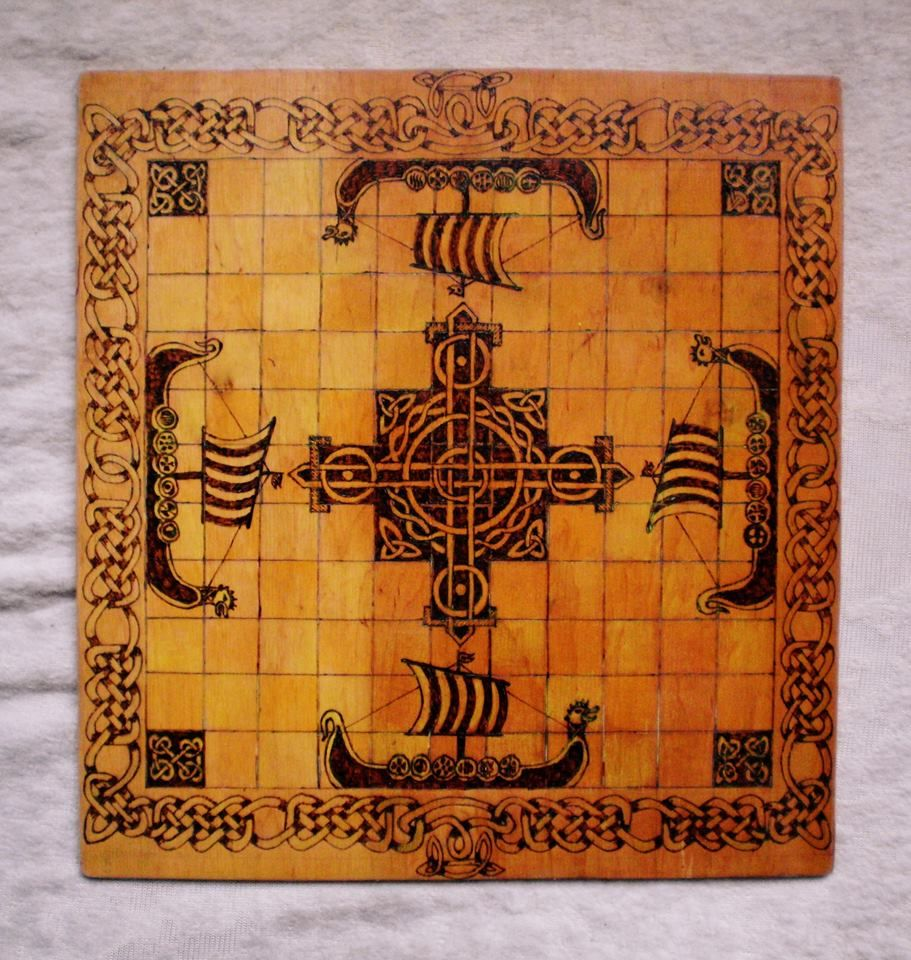
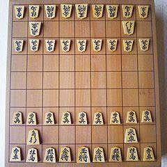

A sakk
története sok évre, évtizedre, sőt
évszázadokra nyúlik vissza! De ki találta ki azt a játékot, amelyet
mindannyian szeretünk? Mi volt ennek a híres mentális gyakorlatnak az eredete, amelyet sok millió ember játszik?
A sakk világszerte ismert, számos rajongó játszik benne, de gyökerei és eredete nem világos és vitatható.
Különféle legendák, történetek és egyszerű találgatások léteznek, kezdve a vitától, hogy honnan származik, és
egészen a sakk kezdetéig.
Egy ősi legenda, amelyet sok gyermek még megtalálhat matematikai könyveik
a zsarnok indiai királyról, Shahramról és egy bölcs emberről szólnak a királyságában. A bölcs ember meg
akarta győzni Sihrámot az országának minden lakójának fontosságáról.
Tehát kitalált egy játékot, amely a királyságot képviseli magában a királyból, királynőjéből, rookokból,
püspökökből, lovagokból és gyalogok, amelyek mind fontosak voltak.
A királynak nagyon tetszett a játék, és megértette, hogy a játék olyan, mint a való élet. Szóval a
királyságában mindenkit sakkozni parancsolt! Sahram felajánlotta az embernek az összes aranyat és ezüstöt,
amit csak akart, de a bölcs nem akart kincset.
A királlyal együtt sakktáblához ment, és megkérte, hogy tegyen egy szem búzát. az első téren kettőt a
másodikon, és folyamatosan duplázzuk, amíg a sakktábla meg nem telik.
Először is a király nagyon sértettnek érezte magát, de aztán megparancsolta szolgáinak, hogy teljesítsék a
férfi kívánságát. A szolgák kétségbeesetten közölték, hogy ekkora mennyiségű búza nem létezik!
A király megértette, hogy a bölcs második leckét adott neki. Csakúgy, mint a sakkban lévő gyalogokat, soha
nem szabad lebecsülni az élet apróságait!
Ez az egyik legnépszerűbb legenda a sakk történetéről. De az biztos, hogy még sok más van …
Mi
is a sakk történelme?
A sakk története a legendák világába nyúlik vissza. Az első ismert sakkváltozat valószínűleg
Indiában alakult
ki, a csaturanga (chaturanga) nevű játék , amely a modern sakkhoz képest leegyszerűsített
volt.
Európába a sakk
arab közvetítéssel jutott, és közben olyan változtatásokat alkalmaztak, ami elvezetett a mai modern
sakkig.

Európában olyan játékokat szorított ki, mint a viking sakk. A másik irányba a fejlődési
útvonal
kevésbé követhető. A legvalószínűbb elképzelés szerint Indiából Kínába, majd Japánba vitték át a
játékot, és közben jóval nagyobb változásokat szenvedett, mint a nyugat felé tartó útja során.
A kínai sakk táblamérete is más, a bábuk is különböznek, és a lépésekben is más szabályok
vannak.

A japán shogi sakk pedig olyan, a játék jellegét alapvetően felforgató elemeket tartalmaz,
mint a levett
bábuk visszatétele. Egy kevésbé elfogadott hipotézis szerint esetleg a kínai volt az eredeti
változat.A sakkot akkor is megnyerheti a játékos ha a soron következö játékos nem tud lépni.